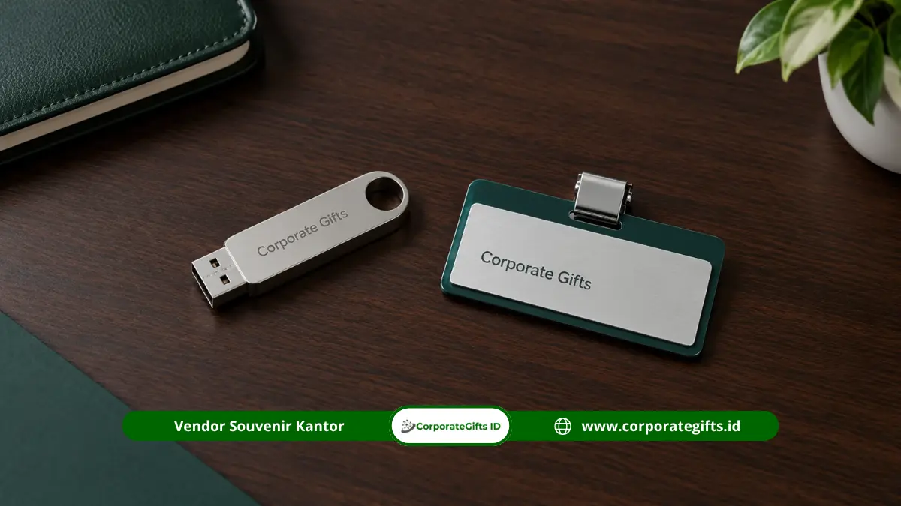

Corporate Gifts ID - Souvenir instansi custom logo adalah produk cendera mata yang diberi identitas visual lembaga melalui cetak, grafir, atau metode branding lainnya. Pilihannya mencakup plakat akrilik, flash disk custom, dan name tag yang disesuaikan dengan material dan pedoman identitas instansi. Corporate Gifts membantu mencocokkan produk, metode branding, dan spesifikasi logo agar hasil konsisten di seluruh pesanan.
Poin Kunci Souvenir Custom Logo Instansi:
- Representasi Visual: Souvenir custom logo menampilkan identitas visual instansi pada produk yang bernilai fungsional.
- Kesesuaian Material: Karakteristik material produk menentukan metode branding yang paling optimal dan tahan lama.
- Proporsi Presisi: Ukuran dan posisi logo perlu disesuaikan dengan dimensi area permukaan produk agar tetap proporsional.
- Persetujuan Sampel: Proses persetujuan desain dan sampel fisik wajib dilakukan untuk memeriksa hasil branding sebelum produksi massal.
- Konsistensi Mutu: Standarisasi warna, ukuran, dan penempatan logo menjaga mutu presisi di seluruh volume pesanan.
Apa Itu Souvenir Instansi Custom Logo?
Souvenir instansi custom logo adalah cendera mata yang dirancang khusus dengan logo, nama, atau elemen visual lembaga sehingga langsung dikenali sebagai representasi resmi institusi pemerintah.
Pengertian Souvenir Custom Logo Kedinasan
Souvenir custom logo adalah produk yang dibranding sesuai permintaan pemesan, bukan produk polos yang dibeli secara bebas di pasar eceran. Branding dilakukan lewat pencetakan digital, penggrafiran presisi, atau teknik industri lain yang menyatukan logo secara permanen pada bodi produk.
Fungsi Identitas Visual pada Souvenir Instansi
Identitas visual pada souvenir memperkuat pengenalan kelembagaan setiap kali produk digunakan. Plakat akrilik yang dipajang di meja kerja pejabat atau flash disk custom yang dibawa bepergian sehari-hari menjaga kehadiran citra positif instansi di lingkungan mitra strategis.
Perbedaan Produk Custom Logo dan Produk Standar
Produk standar dijual polos tanpa ikatan emosional, sedangkan produk custom logo melalui tahapan penyusunan proofing desain, penyesuaian warna identitas lembaga, dan kontrol mutu cetak. Tahapan kurasi ini memberikan nilai representatif yang terhormat bagi pihak penerima.
Produk Apa Saja yang Cocok Diberi Logo Instansi?
Produk yang cocok diberi logo instansi adalah plakat akrilik untuk penghargaan, flash disk untuk dokumentasi, dan name tag untuk identitas peserta atau pegawai pada kegiatan kelembagaan.
Sebagai konteks kebijakan belanja pemerintah, Peraturan Presiden Nomor 46 Tahun 2025 yang berlaku sejak 2025 mewajibkan kementerian, lembaga, dan pemerintah daerah mengalokasikan paling sedikit 40 persen anggaran belanja barang/jasa untuk produk usaha mikro, usaha kecil, dan koperasi dari hasil produksi dalam negeri (PDN). Panitia pengadaan perlu menyelaraskan rencana belanja souvenir berlogo dengan kebijakan afirmasi produk dalam negeri tersebut:

Flash disk dan name tag custom berlogo instansi pemerintah sebagai media identitas kedinasan yang praktis dan bernilai guna.
Plakat Akrilik Custom untuk Acara Penghargaan
Plakat akrilik adalah plakat penghargaan transparan berbahan akrilik berkualitas tinggi yang dapat diberi logo instansi, nama penerima apresiasi, dan narasi penghargaan. Ketebalan akrilik umumnya berkisar antara 8 mm hingga 20 mm dengan teknik potong laser CNC yang sangat rapi. Plakat ini dilengkapi dudukan kayu atau akrilik tebal agar dapat berdiri kokoh di meja kerja.
Flash Disk Custom untuk Kebutuhan Dokumentasi
Flash disk custom adalah media penyimpan data portabel yang casing fisiknya diberi grafir laser atau cetak logo tahan gores. Kapasitas yang umum dipakai untuk souvenir kedinasan berkisar dari 16 GB, 32 GB, hingga 64 GB, dengan casing berbahan metal putar, kartu tipis, atau kayu ramah lingkungan. Flash disk sangat cocok untuk membagikan materi laporan dinas, video profil lembaga, dan file materi seminar.
Name Tag Custom untuk Kegiatan Kelembagaan
Name tag custom adalah tanda pengenal resmi berlogo yang dapat dibuat dari bahan akrilik bening, logam kuningan lapis resin, atau plastik ABS dengan pengait magnet neodymium anti-rusak pakaian. Produk ini menonjolkan kerapian aparatur sipil negara dan panitia pada forum resmi tingkat nasional.
| Pilihan Produk Kedinasan | Metode Branding yang Direkomendasikan | Kelebihan Aplikasi Cetak |
|---|---|---|
| Plakat Akrilik | Cetak UV flatbed, grafir laser presisi, atau print stiker transparan | Tampilan jernih kristal, teks apresiasi tajam, dan tahan lama |
| Flash Disk Custom | Laser engraving pada bodi logam/kayu, atau cetak UV pada plastik | Tahan terhadap gesekan kantong dan awet digunakan bertahun-tahun |
| Name Tag Kedinasan | Cetak digital berlapis resin cembung lycal atau grafir logam | Kilau eksklusif, tahan goresan fisik, dan berkesan sangat formal |
Metode Branding Logo Apa yang Tersedia untuk Souvenir?
Metode branding logo yang umum untuk souvenir kedinasan meliputi sablon, cetak digital, laser engraving, UV printing, serta emboss dan deboss pada material yang sesuai:
Sablon Manual dan Cetak Digital
Sablon manual menyalurkan tinta melalui screen untuk menghasilkan warna solid yang tebal dan pekat, sangat cocok untuk pesanan massal ratusan hingga ribuan pcs. Sedangkan cetak digital lebih cocok untuk logo dengan gradasi warna yang kompleks pada media datar.
Laser Engraving dan Grafir Presisi
Laser engraving mengikis permukaan material secara mikro menggunakan sinar laser berkecepatan tinggi. Metode ini sangat ideal untuk permukaan logam (stainless steel, aluminium), kayu, dan akrilik tebal, menghasilkan tekstur monokrom yang abadi tanpa risiko luntur.
UV Printing Flatbed Multiwarna
UV printing mencetak tinta khusus yang langsung dikeringkan seketika oleh sinar ultraviolet. Keunggulannya adalah mampu mencetak resolusi tinggi full-color dengan gradasi rumit langsung pada permukaan datar seperti casing powerbank, flash disk, tumbler, dan plakat.
Emboss dan Deboss pada Material Kulit
Emboss menghasilkan efek timbul, sedangkan deboss menekan pola logo ke dalam material. Teknik pemanasan klise plat logam ini sangat cocok diterapkan pada kulit sintetis cover agenda rapat, id card holder, dan gantungan kunci eksklusif.
Bagaimana Cara Menyiapkan Desain Logo Instansi?
Menyiapkan desain logo instansi berarti menyediakan file beresolusi memadai, warna sesuai pedoman identitas visual, ukuran dan posisi yang tepat, serta elemen desain yang tetap terbaca:
Menggunakan File Logo Beresolusi Vektor
Format file vektor seperti AI (Adobe Illustrator), EPS, atau PDF Vector menjaga ketajaman garis logo saat diperbesar atau diperkecil ke berbagai ukuran produk. File raster resolusi rendah (JPEG/PNG kecil) berisiko pecah atau bergerigi saat dicetak.
Menyesuaikan Warna dengan Pedoman Identitas Visual
Sertakan kode warna resmi lembaga (seperti kode Pantone, CMYK, atau hex code) sebagai acuan tim produksi. Penyesuaian formula tinta dilakukan agar warna hasil cetak pada media fisik mendekati standar resmi lembaga.
Menentukan Ukuran dan Posisi Logo yang Proporsional
Ukuran logo harus proporsional terhadap luas bidang cetak produk. Pada benda berukuran kecil seperti name tag atau flash disk, logo dan nama instansi harus tetap terbaca jelas dari jarak interaksi kerja normal.
Memeriksa Keterbacaan Elemen Desain Mikro
Elemen teks berukuran sangat kecil atau garis pembatas tipis di dalam lambang lembaga terkadang sulit direproduksi sempurna pada teknik grafir tertentu. Tim desainer Corporate Gifts akan membantu menyederhanakan elemen tanpa mengurangi esensi lambang resmi.
Bagaimana Proses Produksi Souvenir Custom Logo?
Proses produksi souvenir custom logo mencakup pemilihan produk dan material, penyiapan layout branding, persetujuan mockup, verifikasi sampel awal, dan kontrol kualitas ketat sebelum serah terima:
Menentukan Produk dan Karakter Material
Pilih produk yang tepat berdasarkan kebutuhan audiens acara, lalu pastikan material dasar cocok dengan metode cetak yang diharapkan.
Menyiapkan Desain Branding dan Layout
Layout penempatan logo disusun secara digital pada cetak biru produk, mempertimbangkan batas aman margin potong dan kelengkungan bodi.
Menyetujui Mockup Digital atau Sampel Fisik
Persetujuan resmi dari panitia pengadaan menjadi dasar acuan (golden sample) bagi operator mesin produksi sebelum proses cetak massal dijalankan.
Memeriksa Hasil Branding Sampel Awal
Beberapa unit sampel awal dari lini produksi diperiksa ulang ketajaman garisnya, ketepatan registrasi warna, serta daya rekat tintanya.
Melakukan Pemeriksaan Kualitas Sebelum Distribusi
Pemeriksaan akhir (final quality inspection) memastikan setiap unit produk bersih dari noda sidik jari, tidak tergores, dan dikemas rapi dalam dus perlindungan.
| Elemen Evaluasi | Hal yang Wajib Diperiksa | Toleransi Standar Industri |
|---|---|---|
| Bentuk Logo | Kelengkapan lambang, teks kepanjangan, dan proporsi rasio | Presisi 100% mengikuti file master vektor resmi |
| Akurasi Warna | Kesesuaian dengan standar pedoman visual instansi | Variasi visual minor bergantung pada pantulan dasar bahan |
| Posisi Logo | Titik koordinat penempatan logo pada permukaan produk | Simetris dan berada tepat di area pandang utama |
| Ukuran Dimensi | Skala lebar dan tinggi logo pada produk fisik | Terbaca jelas dan tidak mendominasi berlebihan |
| Kerapian Cetak | Ketajaman tepi garis, ketiadaan blur, dan daya rekat gores | Bebas dari cacat lelehan tinta, bayangan, atau retak |
Faktor Apa yang Memengaruhi Biaya Souvenir Custom Logo?
Biaya souvenir custom logo dipengaruhi oleh jenis produk dan material, pilihan metode branding, jumlah volume pesanan, serta kompleksitas desain dan kemasan:
- Jenis Produk dan Material Dasar: Material akrilik bermutu tinggi, logam aluminium, atau kayu solid memiliki harga bahan baku yang berbeda dengan plastik standar.
- Metode Branding yang Dipilih: Pembuatan cetakan klise khusus untuk hotprint atau deboss memerlukan biaya setup awal tersendiri, sedangkan cetak UV atau grafir dihitung berdasarkan dimensi luas area cetak per titik.
- Volume Kuantitas Pesanan: Skala pesanan massal menurunkan biaya setup mesin per unit, menghasilkan harga satuan yang lebih hemat dan efisien.
- Kompleksitas Desain dan Kemasan Box: Logo multiwarna dengan banyak titik cetak di bagian depan dan belakang produk, serta penambahan kotak hardbox eksklusif, akan menambah komponen biaya yang transparan.
Pertanyaan Seputar Souvenir Instansi Custom Logo (FAQ)
Kesimpulan: Wujudkan Cendera Mata Instansi yang Presisi dan Berwibawa
Souvenir custom logo memerlukan pemilihan produk dan metode branding yang tepat sesuai dengan karakteristik material serta identitas visual instansi pemerintah. Persetujuan desain mockup dan kontrol mutu berlapis menjadi jaminan utama kerapian cinderamata kedinasan Anda.
Siapkan file logo resmi, pilihan produk yang diminati, dan estimasi jumlah pesanan untuk mendapatkan penawaran souvenir custom terbaik. Corporate Gifts siap membantu menyusun spesifikasi branding yang presisi dan representatif untuk mendukung kesuksesan agenda instansi Anda.